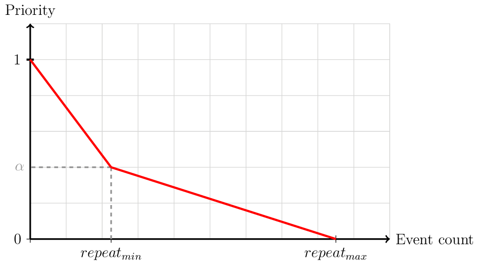

Event¶
- class archABM.event.Event(model: archABM.event_model.EventModel, place: archABM.place.Place, duration: int)[source]¶
Event primitive
An event is defined by an activity
EventModel, that happens at a given physical locationPlace`, for a finite period of time, in minutes (duration).- place: archABM.place.Place¶
Event Model¶
- class archABM.event_model.EventModel(params: archABM.parameters.Parameters)[source]¶
Defines an event model, also called “activity”
An event model is defined by these parameters:
Activity name:
strOther parameters:
The schedule defines the allowed periods of time in which an activity can happen. For example,
schedule=[(120,180),(240,300)]allows people to carry out this activity from the time120to180and also from time240until300. Notice that the schedule units are in minutes.Each activity is limited to a certain duration, and its priority follows a piecewise linear function, parametrized by:
r: repeatminR: repeatmaxe: event count
\[\begin{split}Priority(e) = \left\{\begin{matrix} 1-(1-\alpha)\cfrac{e}{r}\,,\quad 0 \leq e < r \\ \alpha\cfrac{R-e}{R-r}\,,\quad r \leq e < R \ \end{matrix}\right.\end{split}\]
- params: archABM.parameters.Parameters¶
- classmethod reset() → None[source]¶
Resets
EventModelID.
- static next() → None[source]¶
Increments one unit the
EventModelID.
- new()[source]¶
Generates a
EventModelcopy, with reset count and noise- Returns
cloned instance
- Return type
- duration(now) → int[source]¶
Generates a random duration between
duration_minandduration_max.Note
If the generated duration, together with the current timestamp, exceeds the allowed schedule, the duration is limited to finish at the scheduled time interval.
The
noiseattribute is used to model the schedule’s time tolerance.
- priority() → float[source]¶
Computes the priority of a certain event.
The priority function follows a piecewise linear function, parametrized by:
r: repeatminR: repeatmaxe: event count
\[\begin{split}Priority(e) = \left\{\begin{matrix} 1-(1-\alpha)\cfrac{e}{r}\,,\quad 0 \leq e < r \\ \alpha\cfrac{R-e}{R-r}\,,\quad r \leq e < R \ \end{matrix}\right.\end{split}\]- Returns
priority value [0-1]
- Return type
- probability(now: int) → float[source]¶
Wrapper to call the priority function
If the event
countis equal to therepeat_maxparameters, it yields a0probability. Otherwise, it computes thepriority()function described above.
Event Generator¶
- class archABM.event_generator.EventGenerator(env: simpy.core.Environment, db: archABM.database.Database)[source]¶
Generates events
An event is defined by an activity
EventModel, that happens at a given physical locationPlace, for a finite period of time, in minutes (duration).A event generator has certain event models to choose from, each one related to an activity.
- generate(now: int, person)[source]¶
Generates events
First, it computes the probabilities and the validity of each
EventModelat the current timestamp. Then, the activity is selected based on these probabilities as follows:If there exists any probability among the list of
EventModel, the activity is selected randomly according to the relative probabilities.If all
EventModelhave0probability, then the activity is selected randomly among the valid ones.Otherwise a random activity is returned.
Once the activity type
EventModelhas been selected, the event duration can computed and the physical locationPlace`can also be chosen.The selected activity is counted (consumed) from the list of
EventModelof the invoking person.Note
Collective activities are consumed individually after the current event interruption.
- Parameters
- Returns
generated
Event, which is a set of a) activityEventModel, b) physical locationPlace`and c) time duration.- Return type
- consume_activity(model: archABM.event_model.EventModel)[source]¶
Consumes a unit from a given
EventModel.- Parameters
model (EventModel) – event model to consume from
- valid_activity(model: archABM.event_model.EventModel)[source]¶
Checks whether a given
EventModelis valid.- Parameters
model (EventModel) – event model to check validity from
- Returns
whether the event model is valid
- Return type
[bool]